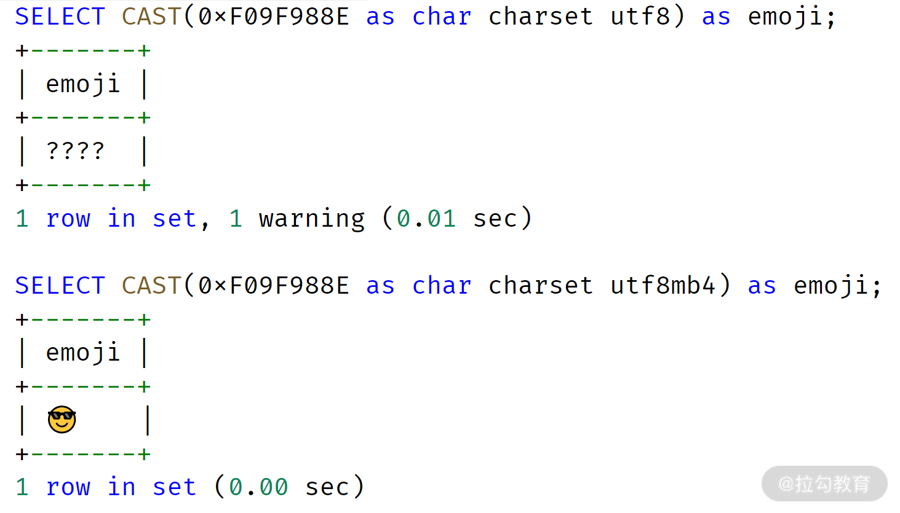

- 00 开篇词 从业务出发，开启海量 MySQL 架构设计.md.html
- 01 数字类型：避免自增踩坑.md.html
- 02 字符串类型：不能忽略的 COLLATION.md.html
- 03 日期类型：TIMESTAMP 可能是巨坑.md.html
- 04 非结构存储：用好 JSON 这张牌.md.html
- 05 表结构设计：忘记范式准则.md.html
- 06 表压缩：不仅仅是空间压缩.md.html
- 07 表的访问设计：你该选择 SQL 还是 NoSQL？.md.html
- 08 索引：排序的艺术.md.html
- 09 索引组织表：万物皆索引.md.html
- 10 组合索引：用好，性能提升 10 倍！.md.html
- 11 索引出错：请理解 CBO 的工作原理.md.html
- 12 JOIN 连接：到底能不能写 JOIN？.md.html
- 13 子查询：放心地使用子查询功能吧！.md.html
- 14 分区表：哪些场景我不建议用分区表？.md.html
- 15 MySQL 复制：最简单也最容易配置出错.md.html
- 16 读写分离设计：复制延迟？其实是你用错了.md.html
- 17 高可用设计：你怎么活用三大架构方案？.md.html
- 18 金融级高可用架构：必不可少的数据核对.md.html
- 19 高可用套件：选择这么多，你该如何选？.md.html
- 20 InnoDB Cluster：改变历史的新产品.md.html
- 21 数据库备份：备份文件也要检查！.md.html
- 22 分布式数据库架构：彻底理解什么叫分布式数据库.md.html
- 23 分布式数据库表结构设计：如何正确地将数据分片？.md.html
- 24 分布式数据库索引设计：二级索引、全局索引的最佳设计实践.md.html
- 25 分布式数据库架构选型：分库分表 or 中间件 ？.md.html
- 26 分布式设计之禅：全链路的条带化设计.md.html
- 27 分布式事务：我们到底要不要使用 2PC？.md.html
- 捐赠
02 字符串类型：不能忽略的 COLLATION
今天我想和你聊一聊字符串类型的排序规则。
上一讲我们了解了怎么在表结构设计中正确使用数字类型，除了数字类型，字符串类型在表结构设计时也比较常见，它通常用于描述具体的信息。
MySQL 数据库的字符串类型有 CHAR、VARCHAR、BINARY、BLOB、TEXT、ENUM、SET。不同的类型在业务设计、数据库性能方面的表现完全不同，其中最常使用的是 CHAR、VARCHAR。今天我就带你深入了解字符串类型 CHAR、VARCHAR 的应用，希望学完这一讲，你能真正用好 MySQL 的字符串类型，从而设计出一个更为优美的业务表结构。
CHAR 和 VARCHAR 的定义
CHAR(N) 用来保存固定长度的字符，N 的范围是 0 ~ 255，请牢记，N 表示的是字符，而不是字节。VARCHAR(N) 用来保存变长字符，N 的范围为 0 ~ 65536， N 表示字符。
在超出 65536 个字符的情况下，可以考虑使用更大的字符类型 TEXT 或 BLOB，两者最大存储长度为 4G，其区别是 BLOB 没有字符集属性，纯属二进制存储。
和 Oracle、Microsoft SQL Server 等传统关系型数据库不同的是，MySQL 数据库的 VARCHAR 字符类型，最大能够存储 65536 个字符，所以在 MySQL 数据库下，绝大部分场景使用类型 VARCHAR 就足够了。
字符集
在表结构设计中，除了将列定义为 CHAR 和 VARCHAR 用以存储字符以外，还需要额外定义字符对应的字符集，因为每种字符在不同字符集编码下，对应着不同的二进制值。常见的字符集有 GBK、UTF8，通常推荐把默认字符集设置为 UTF8。
而且随着移动互联网的飞速发展，推荐把 MySQL 的默认字符集设置为 UTF8MB4，否则，某些 emoji 表情字符无法在 UTF8 字符集下存储，比如 emoji 笑脸表情，对应的字符编码为 0xF09F988E：

若强行在字符集为 UTF8 的列上插入 emoji 表情字符， MySQL 会抛出如下错误信息：
mysql> SHOW CREATE TABLE emoji_test\G
*************************** 1. row ***************************
Table: emoji_test
Create Table: CREATE TABLE `emoji_test` (
`a` varchar(100) CHARACTER SET utf8,
PRIMARY KEY (`a`)
) ENGINE=InnoDB DEFAULT CHARSET=utf8
1 row in set (0.01 sec)
mysql> INSERT INTO emoji_test VALUES (0xF09F988E);
ERROR 1366 (HY000): Incorrect string value: '\xF0\x9F\x98\x8E' for column 'a' at row 1
包括 MySQL 8.0 版本在内，字符集默认设置成 UTF8MB4，8.0 版本之前默认的字符集为 Latin1。因为不同版本默认字符集的不同，你要显式地在配置文件中进行相关参数的配置：
[mysqld]
character-set-server = utf8mb4
...
另外，不同的字符集，CHAR(N)、VARCHAR(N) 对应最长的字节也不相同。比如 GBK 字符集，1 个字符最大存储 2 个字节，UTF8MB4 字符集 1 个字符最大存储 4 个字节。所以从底层存储内核看，在多字节字符集下，CHAR 和 VARCHAR 底层的实现完全相同，都是变长存储！

从上面的例子可以看到，CHAR(1) 既可以存储 1 个 ‘a’ 字节，也可以存储 4 个字节的 emoji 笑脸表情，因此 CHAR 本质也是变长的。
鉴于目前默认字符集推荐设置为 UTF8MB4，所以在表结构设计时，可以把 CHAR 全部用 VARCHAR 替换，底层存储的本质实现一模一样。
排序规则
排序规则（Collation）是比较和排序字符串的一种规则，每个字符集都会有默认的排序规则，你可以用命令 SHOW CHARSET 来查看：
mysql> SHOW CHARSET LIKE 'utf8%';
+---------+---------------+--------------------+--------+
| Charset | Description | Default collation | Maxlen |
+---------+---------------+--------------------+--------+
| utf8 | UTF-8 Unicode | utf8_general_ci | 3 |
| utf8mb4 | UTF-8 Unicode | utf8mb4_0900_ai_ci | 4 |
+---------+---------------+--------------------+--------+
2 rows in set (0.01 sec)
mysql> SHOW COLLATION LIKE 'utf8mb4%';
+----------------------------+---------+-----+---------+----------+---------+---------------+
| Collation | Charset | Id | Default | Compiled | Sortlen | Pad_attribute |
+----------------------------+---------+-----+---------+----------+---------+---------------+
| utf8mb4_0900_ai_ci | utf8mb4 | 255 | Yes | Yes | 0 | NO PAD |
| utf8mb4_0900_as_ci | utf8mb4 | 305 | | Yes | 0 | NO PAD |
| utf8mb4_0900_as_cs | utf8mb4 | 278 | | Yes | 0 | NO PAD |
| utf8mb4_0900_bin | utf8mb4 | 309 | | Yes | 1 | NO PAD |
| utf8mb4_bin | utf8mb4 | 46 | | Yes | 1 | PAD SPACE |
......
排序规则以 _ci 结尾，表示不区分大小写（Case Insentive），_cs 表示大小写敏感，_bin 表示通过存储字符的二进制进行比较。需要注意的是，比较 MySQL 字符串，默认采用不区分大小的排序规则：
mysql> SELECT 'a' = 'A';
+-----------+
| 'a' = 'A' |
+-----------+
| 1 |
+-----------+
1 row in set (0.00 sec)
mysql> SELECT CAST('a' as char) COLLATE utf8mb4_0900_as_cs = CAST('A' as CHAR) COLLATE utf8mb4_0900_as_cs as result;
+--------+
| result |
+--------+
| 0 |
+--------+
1 row in set (0.00 sec)
牢记，绝大部分业务的表结构设计无须设置排序规则为大小写敏感！除非你能明白你的业务真正需要。
正确修改字符集
当然，相信不少业务在设计时没有考虑到字符集对于业务数据存储的影响，所以后期需要进行字符集转换，但很多同学会发现执行如下操作后，依然无法插入 emoji 这类 UTF8MB4 字符：
ALTER TABLE emoji_test CHARSET utf8mb4;
其实，上述修改只是将表的字符集修改为 UTF8MB4，下次新增列时，若不显式地指定字符集，新列的字符集会变更为 UTF8MB4，但对于已经存在的列，其默认字符集并不做修改，你可以通过命令 SHOW CREATE TABLE 确认：
mysql> SHOW CREATE TABLE emoji_test\G
*************************** 1. row ***************************
Table: emoji_test
Create Table: CREATE TABLE `emoji_test` (
`a` varchar(100) CHARACTER SET utf8 COLLATE utf8_general_ci NOT NULL,
PRIMARY KEY (`a`)
) ENGINE=InnoDB DEFAULT CHARSET=utf8mb4 COLLATE=utf8mb4_0900_ai_ci
1 row in set (0.00 sec)
可以看到，列 a 的字符集依然是 UTF8，而不是 UTF8MB4。因此，正确修改列字符集的命令应该使用 ALTER TABLE … CONVERT TO…这样才能将之前的列 a 字符集从 UTF8 修改为 UTF8MB4：
mysql> ALTER TABLE emoji_test CONVERT TO CHARSET utf8mb4;
Query OK, 0 rows affected (0.94 sec)
Records: 0 Duplicates: 0 Warnings: 0
mysql> SHOW CREATE TABLE emoji_test\G
*************************** 1. row ***************************
Table: emoji_test
Create Table: CREATE TABLE `emoji_test` (
`a` varchar(100) CHARACTER SET utf8mb4 COLLATE utf8mb4_0900_ai_ci NOT NULL,
PRIMARY KEY (`a`)
) ENGINE=InnoDB DEFAULT CHARSET=utf8mb4 COLLATE=utf8mb4_0900_ai_ci
1 row in set (0.00 sec)
讲到这儿，我们已经学完了字符串相关的基础知识，接下来就一起进行 MySQL 字符串表结构的设计实战，希望你能在设计中真正用好字符串类型。
业务表结构设计实战
用户性别设计
设计表结构时，你会遇到一些固定选项值的字段。例如，性别字段（Sex），只有男或女；又或者状态字段（State），有效的值为运行、停止、重启等有限状态。
我观察后发现，大多数开发人员喜欢用 INT 的数字类型去存储性别字段，比如：
CREATE TABLE `User` (
`id` bigint NOT NULL AUTO_INCREMENT,
`sex` tinyint DEFAULT NULL,
......
PRIMARY KEY (`id`)
) ENGINE=InnoDB；
其中，tinyint 列 sex 表示用户性别，但这样设计问题比较明显。
- 表达不清：在具体存储时，0 表示女，还是 1 表示女呢？每个业务可能有不同的潜规则；
- 脏数据：因为是 tinyint，因此除了 0 和 1，用户完全可以插入 2、3、4 这样的数值，最终表中存在无效数据的可能，后期再进行清理，代价就非常大了。
在 MySQL 8.0 版本之前，可以使用 ENUM 字符串枚举类型，只允许有限的定义值插入。如果将参数 SQL_MODE 设置为严格模式，插入非定义数据就会报错：
mysql> SHOW CREATE TABLE User\G
*************************** 1. row ***************************
Table: User
Create Table: CREATE TABLE `User` (
`id` bigint NOT NULL AUTO_INCREMENT,
`sex` enum('M','F') COLLATE utf8mb4_general_ci DEFAULT NULL,
PRIMARY KEY (`id`)
) ENGINE=InnoDB
1 row in set (0.00 sec)
mysql> SET sql_mode = 'STRICT_TRANS_TABLES';
Query OK, 0 rows affected, 1 warning (0.00 sec)
mysql> INSERT INTO User VALUES (NULL,'F');
Query OK, 1 row affected (0.08 sec)
mysql> INSERT INTO User VALUES (NULL,'A');
ERROR 1265 (01000): Data truncated for column 'sex' at row 1
由于类型 ENUM 并非 SQL 标准的数据类型，而是 MySQL 所独有的一种字符串类型。抛出的错误提示也并不直观，这样的实现总有一些遗憾，主要是因为MySQL 8.0 之前的版本并没有提供约束功能。自 MySQL 8.0.16 版本开始，数据库原生提供 CHECK 约束功能，可以方便地进行有限状态列类型的设计：
mysql> SHOW CREATE TABLE User\G
*************************** 1. row ***************************
Table: User
Create Table: CREATE TABLE `User` (
`id` bigint NOT NULL AUTO_INCREMENT,
`sex` char(1) COLLATE utf8mb4_general_ci DEFAULT NULL,
PRIMARY KEY (`id`),
CONSTRAINT `user_chk_1` CHECK (((`sex` = _utf8mb4'M') or (`sex` = _utf8mb4'F')))
) ENGINE=InnoDB
1 row in set (0.00 sec)
mysql> INSERT INTO User VALUES (NULL,'M');
Query OK, 1 row affected (0.07 sec)
mysql> INSERT INTO User VALUES (NULL,'Z');
ERROR 3819 (HY000): Check constraint 'user_chk_1' is violated.
从这段代码中看到，第 8 行的约束定义 user_chk_1 表示列 sex 的取值范围，只能是 M 或者 F。同时，当 15 行插入非法数据 Z 时，你可以看到 MySQL 显式地抛出了违法约束的提示。
账户密码存储设计
切记，在数据库表结构设计时，千万不要直接在数据库表中直接存储密码，一旦有恶意用户进入到系统，则面临用户数据泄露的极大风险。比如金融行业，从合规性角度看，所有用户隐私字段都需要加密，甚至业务自己都无法知道用户存储的信息（隐私数据如登录密码、手机、信用卡信息等）。
相信不少开发开发同学会通过函数 MD5 加密存储隐私数据，这没有错，因为 MD5 算法并不可逆。然而，MD5 加密后的值是固定的，如密码 12345678，它对应的 MD5 固定值即为 25d55ad283aa400af464c76d713c07ad。
因此，可以对 MD5 进行暴力破解，计算出所有可能的字符串对应的 MD5 值。若无法枚举所有的字符串组合，那可以计算一些常见的密码，如111111、12345678 等。我放在文稿中的这个网站，可用于在线解密 MD5 加密后的字符串。
所以，在设计密码存储使用，还需要加盐（salt），每个公司的盐值都是不同的，因此计算出的值也是不同的。若盐值为 psalt，则密码 12345678 在数据库中的值为：
password = MD5（‘psalt12345678’）
这样的密码存储设计是一种固定盐值的加密算法，其中存在三个主要问题：
- 若 salt 值被（离职）员工泄漏，则外部黑客依然存在暴利破解的可能性；
- 对于相同密码，其密码存储值相同，一旦一个用户密码泄漏，其他相同密码的用户的密码也将被泄漏；
- 固定使用 MD5 加密算法，一旦 MD5 算法被破解，则影响很大。
所以一个真正好的密码存储设计，应该是：动态盐 + 非固定加密算法。
我比较推荐这么设计密码，列 password 存储的格式如下：
$salt$cryption_algorithm$value
其中：
- $salt：表示动态盐，每次用户注册时业务产生不同的盐值，并存储在数据库中。若做得再精细一点，可以动态盐值 + 用户注册日期合并为一个更为动态的盐值。
- $cryption_algorithm：表示加密的算法，如 v1 表示 MD5 加密算法，v2 表示 AES256 加密算法，v3 表示 AES512 加密算法等。
- $value：表示加密后的字符串。
这时表 User 的结构设计如下所示：
CREATE TABLE User (
id BIGINT NOT NULL AUTO_INCREMENT,
name VARCHAR(255) NOT NULL,
sex CHAR(1) NOT NULL,
password VARCHAR(1024) NOT NULL,
regDate DATETIME NOT NULL,
CHECK (sex = 'M' OR sex = 'F'),
PRIMARY KEY(id)
);
SELECT * FROM User\G
*************************** 1. row ***************************
id: 1
name: David
sex: M
password: $fgfaef$v1$2198687f6db06c9d1b31a030ba1ef074
regDate: 2020-09-07 15:30:00
*************************** 2. row ***************************
id: 2
name: Amy
sex: F
password: $zpelf$v2$0x860E4E3B2AA4005D8EE9B7653409C4B133AF77AEF53B815D31426EC6EF78D882
regDate: 2020-09-07 17:28:00
在上面的例子中，用户 David 和 Amy 密码都是 12345678，然而由于使用了动态盐和动态加密算法，两者存储的内容完全不同。
即便别有用心的用户拿到当前密码加密算法，则通过加密算法 $cryption_algorithm 版本，可以对用户存储的密码进行升级，进一步做好对于恶意数据攻击的防范。
总结
字符串是使用最为广泛的数据类型之一，但也是设计最初容易犯错的部分，后期业务跑起来再进行修改，代价将会非常巨大。希望你能反复细读本讲的内容，从而在表结构设计伊始，业务就做好最为充分的准备。我总结下本节的重点内容：
- CHAR 和 VARCHAR 虽然分别用于存储定长和变长字符，但对于变长字符集（如 GBK、UTF8MB4），其本质是一样的，都是变长，设计时完全可以用 VARCHAR 替代 CHAR；
- 推荐 MySQL 字符集默认设置为 UTF8MB4，可以用于存储 emoji 等扩展字符；
- 排序规则很重要，用于字符的比较和排序，但大部分场景不需要用区分大小写的排序规则；
- 修改表中已有列的字符集，使用命令 ALTER TABLE … CONVERT TO ….；
- 用户性别，运行状态等有限值的列，MySQL 8.0.16 版本直接使用 CHECK 约束机制，之前的版本可使用 ENUM 枚举字符串类型，外加 SQL_MODE 的严格模式；
- 业务隐私信息，如密码、手机、信用卡等信息，需要加密。切记简单的MD5算法是可以进行暴力破解，并不安全，推荐使用动态盐+动态加密算法进行隐私数据的存储。
© 2019 - 2023 Liangliang Lee. Powered by gin and hexo-theme-book.